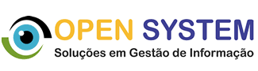
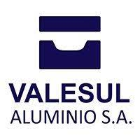

Professor de português, inglês e suas respectivas literaturas EJA (Escola para
jovens e adultos) na escola municipal Leo Joas – Estrela/RS; tutor para o ensino
de língua inglesa no projeto Freire Mandela pela universidade Veiga de Almeida/RJ.

Desenvolvimento de sistemas comerciais.

Realizou atendimento help desk / service desk registrando serviços e soluções;
atuou como ponto de apoio entre as áreas de TI e automação; desenvolveu supervisórios
para os setores operacionais e historiadores sequenciais para engenharia; desenvolveu
sistemas de apoio às gerências industriais, logística de expedição, cálculo de carga
de metal nos fornos conforme composição química das ligas de alumínio gerando relatórios
para as áreas de qualidade e compras e participou de atividades 5S.
Projetos de investigação e monitoramento antifraude; visita à residências para desmontagem de investigação em ligações elétricas e inspeção de novas instalações.
Implantou o sistema PCM para preenchimento de OS pelo técnico via celular;
organizou controle de qualidade reduzindo custos de manutenção; estruturou
dados do sistema PCM para banco de dados relacional SQL SERVER aplicando business
intelligence, data science, data warehouse e big Data; ministrou treinamento
presencial e online para técnicos; orientou inovação para venda de geradores e
aparelhos nobreak novos com garantia mediante contrato de manutenção direcionando os
novos negócios à indústria 4.0 (IoT); orientou o monitoramento de pontos críticos dos
sistemas de manutenção através de historiadores sequenciais; coordenou gerenciamento
do conhecimento (sucesso no projeto e histórico de experiência a evitar); orientou
a direção sobre o sistema de realidade aumentada para treinamento e seleção técnicos.